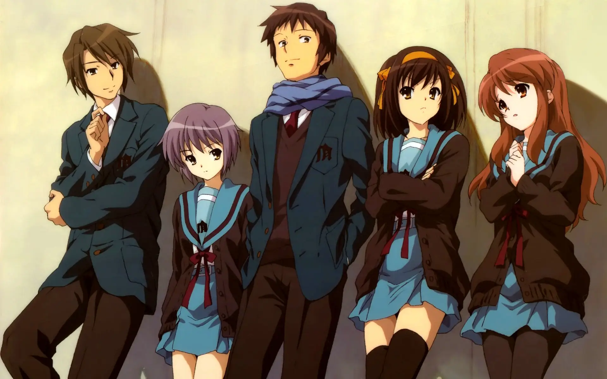
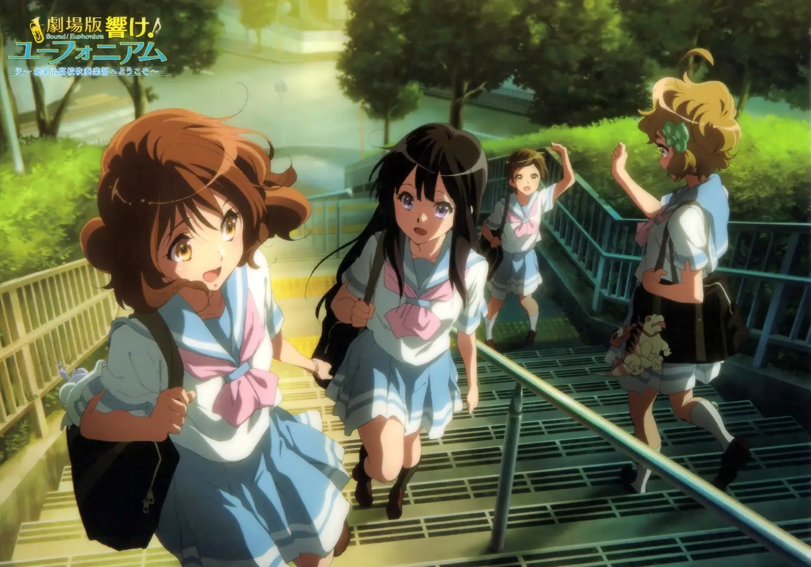

京都动画（日语：京都アニメーション，英语：Kyoto Animation），昵称京阿尼（京アニ），是一家日本动画制作公司。 主要负责动画制作，商品企划、制造、销售、批发、出版的公司，公司成立于1981年。1985年7月12日成为有限公司，并于1999年成为股份有限公司。 2003年开始独立制作动画。其公司商标的设计来自于公司名称开头日本汉字“京”的变化。
2019年7月18日上午10点30分左右，京都动画第一工作室遭到纵火。 依据京都警方最新公布的消息，截至19日晚间为止，受害者共69人，33人死亡，10人重伤，6人中伤，20人轻伤[4]，这是日本自平成以来死伤最严重的纵火事件。 后来更新为36人死亡（其中3人是在被送往医院之后死亡）。
这起事件对京都动画无疑是一次重创：几乎所有的重要文件全毁，工作区被破坏，进度被打乱，而且不少在此事件中不幸身亡的都是重要的动画制作人。 四名董事除石原立也，全部不幸遇难。
| 播出时间 | 作品名称 | 导演监督 | |
|---|---|---|---|
| 2003年 | 8月26日 | 《全金属狂潮？Fumoffu》 | 武本康弘 |
| 2005年 | 1月6日 | 《AIR》 | 石原立也 |
| 7月13日 | 《全金属狂潮TSR》 | 武本康弘 | |
| 2006年 | 4月2日 | 《凉宫春日的忧郁》 | 石原立也 |
| 10月5日 | 《Kanon》 | 石原立也 | |
| 2007年 | 4月8日 | 《幸运星》 | 山本宽、武本康弘 |
| 10月4日 | 《CLANNAD》 | 石原立也 | |
| 2008年 | 10月2日 | 《CLANNAD ~ after story~》 | 石原立也 |
| 2009年 | 1月13日 | 《仰望天空的少女瞳孔中所映照的世界》 | 木上益治 |
| 4月2日 | 《凉宫春日的忧郁2009》 | 石原立也 | |
| 4月2日 | 《轻音少女》 | 山田尚子 | |
| 2010年 | 4月6日 | 《轻音少女第二季》 | 山田尚子 |
| 2011年 | 4月3日 | 《日常》 | 石原立也 |
| 2012年 | 4月22日 | 《冰菓》 | 武本康弘 |
| 10月3日 | 《中二病也要谈恋爱！》 | 石原立也 | |
| 2013年 | 1月9日 | 《玉子市场》 | 山田尚子 |
| 7月3日 | 《Free!》 | 内海紘子 | |
| 10月2日 | 《境界的彼方》 | 石立太一 | |
| 2014年 | 1月8日 | 《中二病也要谈恋爱！恋》 | 石原立也 |
| 7月3日 | 《Free!-Eternal Summer-》 | 内海紘子 | |
| 10月9日 | 《甘城光辉游乐园》 | 武本康弘 | |
| 2015年 | 4月7日 | 《吹响吧！上低音号》 | 石原立也 |
| 2016年 | 1月7日 | 《无彩限的怪灵世界》 | 石原立也 |
| 10月5日 | 《吹响吧！上低音号2》 | 石原立也 | |
| 2017年 | 1月11日 | 《小林家的龙女仆》 | 武本康弘 |
| 2018年 | 1月10日 | 《紫罗兰永恒花园》 | 石立太一 |
| 7月11日 | 《Free!-Dive to the Future-》 | 河浪荣作 | |
| 10月22日 | 《弦音-风舞高中弓道部-》 | 山村卓也 | |
| 2021年 | 7月7日 | 《小林家的龙女仆S》 | 石原立也 |
 